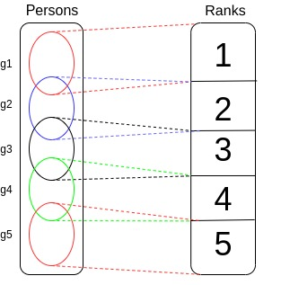

Eminence indicators
Given a group of persons, the purpose is to group them by eminence rank. To build these associations, one can use many informations at disposition. An example is given by Suitbert Ertel, who counted the number of times a sportsman is cited in a predefined list of books. Other indications for sportsmen eminence could be the palmares in competitions.Each piece of information is called an eminence indicator.
Indicators are specific to a professional group. For example, Olympic Games palmares can be used to rank sportsmen, but are meaningless to rank painters. Some indicators provide an ordering, which can be converted to a rank : All the indicators met so far follow this pattern.
Global ranking
Building a global rank consists in combining several indicators to build a synthesis (see below). This introduces arbitrary choices :- Choose the number of ranks (Ertel used 5).
- Give the rules to combine the indicators.
Precautions
Identify human intelligence
Eminence ranking is partly a mechanical process, but human arbitrary human choices are also necessary : the design of the test, number of global ranks, rules to build each indicator, rules to combine them to build global rank.In a suspicious world, these parts of the process must be closely watched, because arbitrary choices can be used for deviant purposes. A consensus is needed to build a ranking that can be acceptable.
Divide by periods
For a given discipline, the available eminence indicators vary with time. For example, Nobel prizes are only relevant for persons active since the beginning of the 20th century. In order to compare what is comparable, the history of each discipline must be divided in coherent periods of time. Major events like world wars can probably be used as period boundaries for most of the disciplines.National and other bias
When ranking persons of a given group, care must be taken to avoid national bias. For example, if citation count is based on a list of books or web sites, if a particular country is over-represented, there is a risk to over-rate persons of this country.The problem of closed data
Valuable informations usable for ranking are held by private companies like Google. This is a problem because using these data to rank people cannot be accepted as scientifically valid, as information can't be verified.Exemples of eminence indicators
Mathematicians will be used for the example (ranking sportsmen is more complex).Polls (human opinion)
Ask living mathematicians, historians of science who are the important mathematicians for them.It can also be done with mathematicians of the past, through autobiographies, interviews or other sources.
Examples : in Récoltes et semailles", Grothendieck cites Galois and Riemann ; in an interview, Jean-Pierre Serre cites André Weil as his model.
This could work like a page rank, where the opinion of eminent persons have stronger weight.
Citation count - global
This was done by Suitbert Ertel.Given a list of books, established in advance, count the number of books where a person is cited, and use this to build a ranking.
Here, one indicator is built from a list of books.
Ertel's work could be for example reproduced, checked and extended to other disciplines by Google Books.
Citation count - local
Take a book about history of mathematics, and count the number of times mathematicians are cited.For example, Gauss will probably appear in several chapters.
Here, one indicator is built from one book.
This could also be done by Google books.
Link count
In web sites containing biographies of persons of given professional groups, like Wikipedia. Eminence indicators can be built counting hypertext links pointing to the pages of the different persons of a group. This is similar to citation count.Here are two examples that permit to rank mathematicians :
- Part of the data available on Wikipedia can be retrieved using Wikidata. One of the fields that Wikidata provides is called linkcount, which is the number of pages pointing to a given page ; this can be used to rank persons. See the page about Wikidata for details.
- The MacTutor History of Mathematics archive is a site containing biographies of mathematicians. It is possible to extract data from the site and build a sorted list. This was done by a program published on github.com/tig12/mactutor-by-links.
Search engines
An other variant of citation count can be done counting the number of times a given person has been searched for, and the number of clics to a page concerning this person. This could be done for example using Google Trends API (Application Programming Interface). Google Trends does not give the absolute numbers of queries concerning a person, but permits to compare the numbers related to two or more persons, which is sufficient to sort the persons.Prizes, awards
For example, use Nobel prize lists to associate the laureates with top-level rank (n° 1).In this case, the associations between persons and ranks could look like this :
Institutions, academies
For example, the french Académie des sciences could generate a ranking like this : This example is obtained saying that members are rank n°1 and correspondants are rank n° 2.Ranked lists
Sites like ranker.com provide sorted lists of famous persons which could be used as indicators.Building a globak rank
The final step is to build a global rank from the different indicators concerning a professional group.For a given professional group, the results of the various indicators can be represented as a table. For mathematicians :
| Wikidata | MacTutor | Field medal | Historian of sciences 1 | etc. | GLOBAL | |
|---|---|---|---|---|---|---|
| person 1 | 1 | 1 | 1 | 1 | ? | |
| person 2 | 2 | 3 | 3 | ? | ||
| etc. | ? |
GLOBAL column ; function : several indicators -> global indicator combining all the indicators of a person to compute a global rank.
The criterions to combine the indicators cannot be decided by programers or investigators (the persons who perform the statistical tests). They must be given by persons who know the studied domain (mathematicians, historians of science for example).
There may exist contradictions between indicators, and some indicators may not be reliable. But if eminence is meaningful, and if the indicators correctly reflect eminence, they should globally say the same thing.
The following situation could be reached :  g1 ... g5 represent groups of persons.
Persons in g1 were associated to rank n° 1.
Persons in both in g1 and g2 were associated to rank n° 1 and 2.
etc.
There will probably be exceptions and particular cases, but it seems reasonable to hope that a consensusual ranking can be obtained for at least part of the persons of a professional group.
It is possible to compute measures of the coherence of the indicators for a given person.